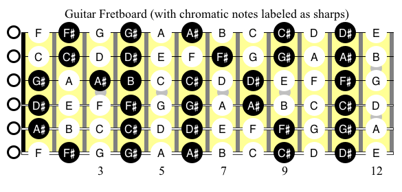
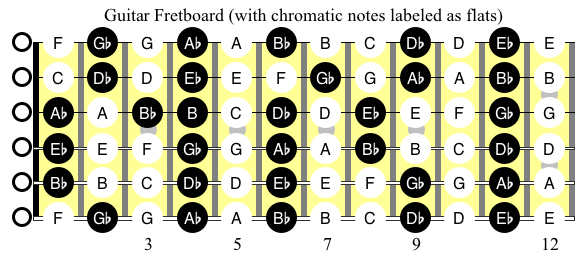
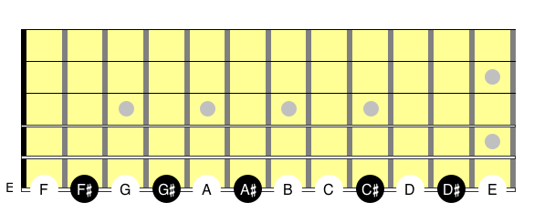
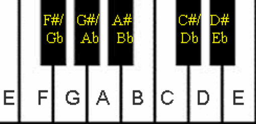
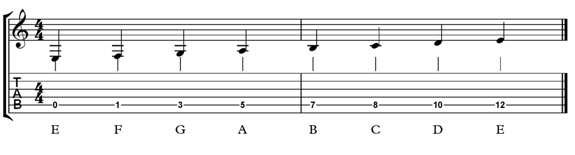
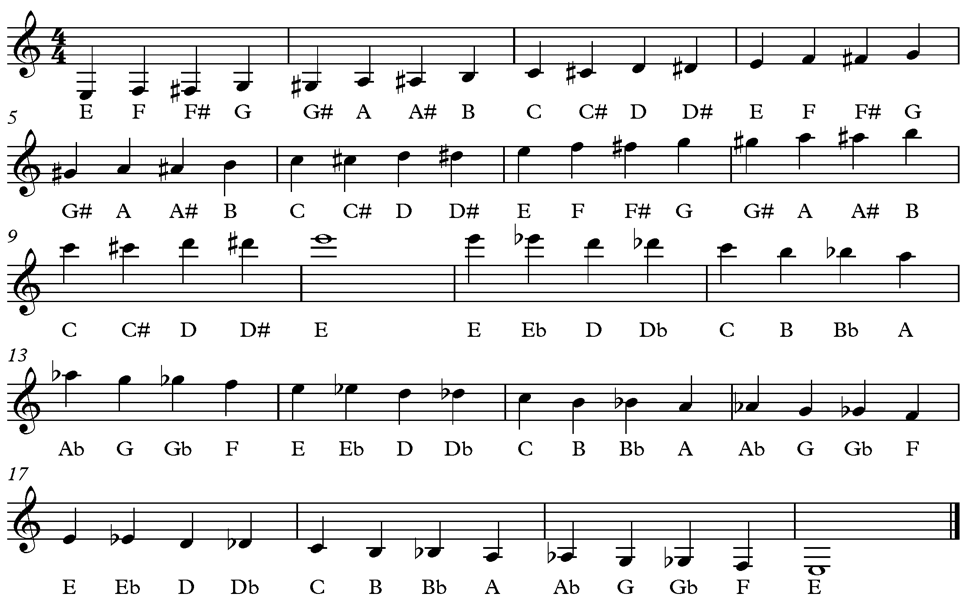
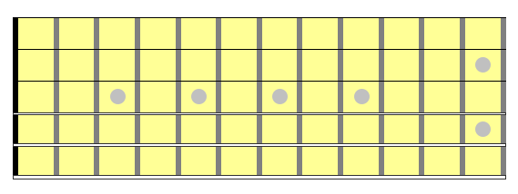

Lesson 0
Notes on the Fretboard
Welcome to Music Theory for Jazz Blues Guitar! You are embarking
upon a self-paced magical adventure of musical discovery. By the
end of this course, you will be able to play anything you want
anywhere you want on the fretboard of your guitar. The fretboard of
your guitar is the equivalent of the keyboard of a piano. So first,
let's learn where every note is located on every string of
every fret! Figure 0-1 displays all the notes located on the first 12 strings
of a guitar fretboard:

Figure 0-1
The fretboard diagram has intentionally been laid out like a piano
keyboard - all the white-circled notes are the same as the white keys
on a piano and all black-circled notes are the same as the black keys.
The white-circled notes are all natural notes; that is, they are
simply themselves. Each black-circled note can be considered as a
white note either raised or lowered a ½-step.
For instance, on the low E-string (the bottom-most string), the
black-circled note on the 2nd fret is labeled “F#” (“F-sharp”).
This simply means that its vibrational frequency is ½-step higher
than F (the relationship of musical tones, vibrational frequency,
and string length are discussed in the next lesson).
You can think of F# as simply F raised a half-step. On a guitar,
raising a note a ½-step is equivalent to moving your finger up the
neck (towards the body of the guitar) one fret.
F# can also be viewed as the note G lowered a ½-step, which is
called Gb (G-flat). Sharps and flats are called “accidentals” in
music, and F# is “enharmonically equivalent” to Gb. This means that
F# and Gb are really the same note (they have identical pitch),
even though they are spelled differently. The reason why this occurs
is due to the way we write music in specific key signatures - which
you will be doing in future lessons!
You may notice that between every 2 white-circled notes (except E
and F, and B and C), there is a black-circled note. All the
black-circled notes contain an accidental and can be written either
with a sharp or a flat.
In Figure 0-1, all the notes with accidentals (black-circled
notes) are sharps. However, we can just as easily label those same
notes on the fretboard with flats, as is done in Figure 0-2:

Figure 0-2
If we just look at the notes located on the low E-string (with
accidentals written as sharps), we see:

Figure 0-3
These same notes contained on the low E string of a guitar would
look like the following on a piano:

Figure 0-4
(http://www.music-for-music-teachers.com/piano-keyboard.html)
The white notes, written in music manuscript and tablature in 4/4
time, look like:

Figure 0-5
Take a few minutes to look at the notes located on the frets of the
low E-string of your guitar, along with Figures 0-3, 0-4, and 0-5.
Correlate in your mind how a musical note on the guitar is represented
on a piano keyboard, along with its music manuscript and tablature
notation. It should be noted, however, that the guitar sounds an
octave higher than its written in manuscript form.
The notes on the entire fretboard of a guitar (up to the 12th fret)
look like the following when written in music manuscript (with note
names written below each note):

Figure 0-6
Notice that there is no tab in Figure 0-6. This is because there
are numerous ways to navigate from one note to the next on a guitar.
This is very different than playing a piano, as there is only one
way to get from one note to another on a keyboard.
This is the challenge and the beauty of playing guitar! And this
is why it is important to spend time learning the notes of the
fretboard and how they are represented in music manuscript form.
It may appear to be overwhelming to memorize where every note is
located on the fretboard, but it is a lot easier than it seems!
In fact, you can learn so much more about anything you want by
intentionally engaging your body, speech, and mind simultaneously.
To learn the notes of the fretboard, try these simple exercises:
Exercise 1:
Place your index finger on F, located on the first fret of the 6th
string. This engages your body, and your muscle-memory will remember
that “F” is located here.
Pluck the note “F” (it doesn’t matter if you use a pick or your
finger) while singing the letter “F” aloud. This engages your speech.
Listen to the note being played on the guitar while you are singing
the note. It doesn’t matter if you don’t believe that you can sing
- just do it and don’t let yourself get in the way of your own learning!!!
You have now connected the muscle-memory of the physical location of
your fretboard with the thought (internal speech) and the sound of “F”.
While you are doing this, visualize the location in your mind’s eye.
You have now connected the physical location and sound of the note F
with your own mental location of F.
Continue this exercise with F# / Gb, then G, etc., going all the way
up the 6th string to the 12th fret (and beyond - go as far as you
can go on that string).
Then do the same procedure along the A-string (5th-string), then
with the D-string (4th-string), G-string (3rd-string), B-string
(2nd-string), and finally the upper E-string (1st-string). This is
assuming that you are in standard guitar tuning.
Exercise 2:
Consider the following sequence of notes:
C - F - Bb - Eb - Ab - Db - Gb/F# - B - E - A - D - G - C
(This is called the Circle of 5ths and you will be delving very
deeply into this later!)
With your body, speech, and mind - that is, touching/plucking the
physical location on the fretboard, listening to the sound, singing
the pitch, and seeing the location in your mind’s eye, play C on the
6th string, then immediately on the 5th string, then the 4th, etc.
all the way to the 1st string. Start slowly, then build up speed.
Use a metronome and once you can play/sing/visualize the note C
from one string to the next at 60 bpm (beats per minute), then do
the same for the note F, and continue in this manner until you have
gone through all the notes in the Circle of 5ths.
Once you can go through the Circle comfortably at 60 bpm, then set
your metronome to a faster speed and practice! Keep increasing the
tempo until you can easily play/sing/visualize the Circle of 5ths
at 120 bpm.
Exercise 3:
Come up with your own progressions of notes and practice Exercise
2 with them. If you have the chords to your favorites songs, then do
this exercise with the root of each chord. The “root” is the letter
part of the name of the chord. For instance, the root of a G minor
7th chord is “G”. If you are doing this exercise with a song that
has a G minor 7th chord, then play/sing/visualize the note G on e
very string of your guitar.
By doing these exercises, you will develop a firm foundation upon
which you will soon be building chords, arpeggios, and scales.
You can even do this exercise away from your guitar, (thus anywhere
you want!), using your mental vision, internal speech, and pretending
that you are placing your finger on the correct location of each note
you are “playing”.
Figure 0-7 below is simply an empty fretboard. This is for you to
print and use.
Practice & Enjoy!

Figure 0-7